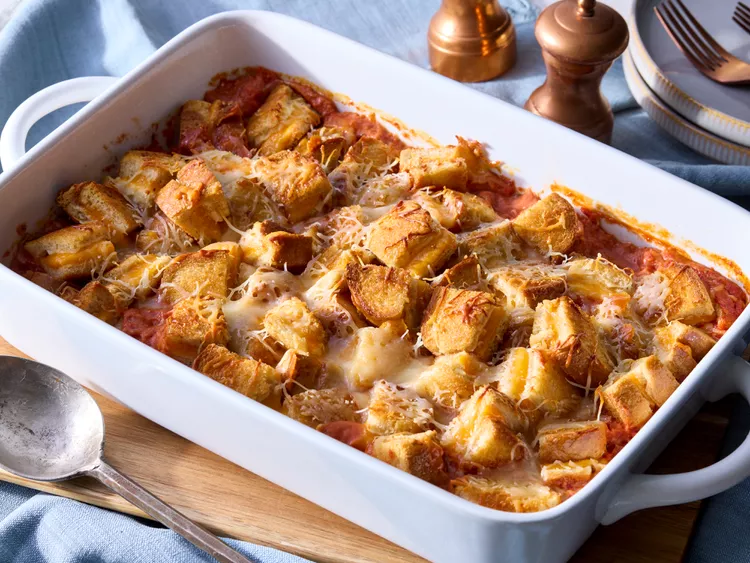

Home
Tomato Soup and Grilled Cheese Casserole

Casserole!
This tomato soup and grilled cheese casserole tastes like the classic combo: Campbell's tomato soup with grilled cheese sandwiches. The baked-in grilled cheese cubes are golden, melty, and delicious.
This recipe and all of the information on this page, belong to a third party. The original recipe, as well as all of this material, is from allrecipes.com, and is only being used for educational purposes.
Ingredients:
- 12 (½-inch thick) slices sourdough bread
- 1/4 cup butter, softened, divided
- 3 ounces cream cheese, softened
- 12 slices pre-sliced Cheddar cheese
- 2 (10.5 ounce) cans condensed tomato soup (such as Campbell's)
- 1 cup tomato juice
- 2 large eggs
- 1 teaspoon Italian seasoning
- 1/2 teaspoon garlic powder
- 1 Roma tomato, seeded and chopped into ½-inch pieces
- 1 cup shredded Italian blend or Cheddar cheese
Steps:
- Gather all ingredients.
- Preheat the oven to 450 degrees F (230 degrees C). Grease a 9x13-inch baking dish.
- Spread 6 slices of bread with 2 tablespoons butter on one side.
- Lay buttered slices of bread, butter side down, on an extra large baking sheet.
- Spread bread slices evenly with cream cheese.
- Top each bread slice with 2 slices of Cheddar cheese
- Top cheese with remaining bread slices.
- Spread tops of bread slices with 2 tablespoons butter.
- Bake sandwiches for 12 to 14 minutes, flipping once, until cheese is melted. Let sandwiches cool at least 15 minutes. Reduce oven temperature to 350 degrees F (175 degrees C).
- Meanwhile, prepare soup mixture. Whisk together tomato soup, tomato juice, eggs, Italian seasoning, and garlic powder in a bowl. Stir in chopped tomato.
- Cut toasted sandwiches into 1-inch cubes.
- Pour soup mixture into prepared dish.
- Place cubes evenly over soup mixture in dish; pressing slightly to submerge in soup mixture.
- Sprinkle with shredded Italian blend cheese.
- Bake until heated through, golden brown, and cheese is melted, 25 to 30 minutes.